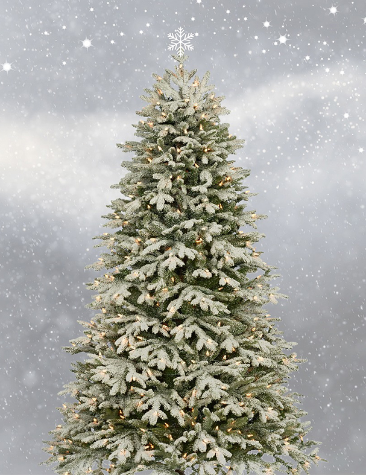

3 miljoner svenska hushåll uppskattas ha julgran under julen.
173 00 Tomteboda är Tomtens adress. Dit skickas varje år 100 000 brev och önskelistor.
Annars brukar tomtens stad vara Rovaniemi som marknadsför sig som "The official hometown of Santa Claus"
Annars brukar tomtens stad vara Rovaniemi som marknadsför sig som "The official hometown of Santa Claus"
3000 * ljusets hastighet måste Tomten färdas i på julafton för att hinna dela ut alla julklappar i tid.
Julgranen är även känd som Yule-träd.
Yule träden går till baka till Paganismens traditioner. Trädet av liv, brukar trädet kallas och dekorationerna skulle symbolisera solen, månen och stjärnorna.
Yule träden går till baka till Paganismens traditioner. Trädet av liv, brukar trädet kallas och dekorationerna skulle symbolisera solen, månen och stjärnorna.
Julgranar dekorerades till en början med mat. Exempelvis äpplen, nötter, eller russin.
Har du någonsin undrar om varför vi säger X-Mas?
X är en symbol för Christ i Grekland so för att korta ned ordet Christmas så använder folk X-Mas.
X är en symbol för Christ i Grekland so för att korta ned ordet Christmas så använder folk X-Mas.
Oklahoma i USA, blev den sista staten att declareara Jul en laglig helgdag. Detta var år 1907
Traditionen med att ge "stygga" barn kolbitar i deras julstrumpor kom ursprungligen ifrån Italien